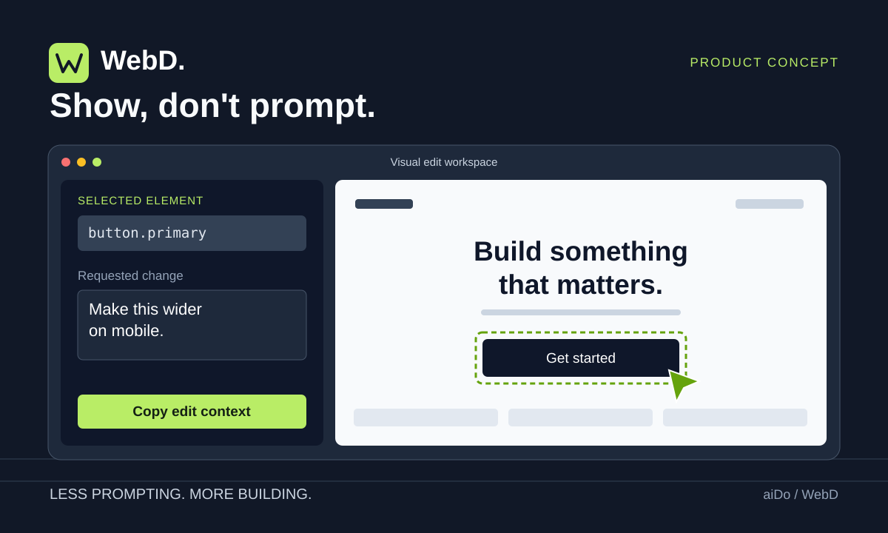
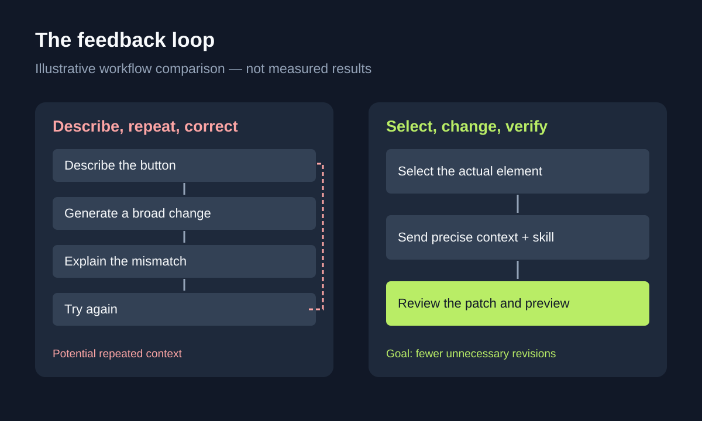

Stop painting the skyscraper: why I’m building WebD
Why I want to make AI-assisted frontend development less about repeated prompts and more about visual feedback, reusable skills and small verified changes.

I was scrolling through YouTube when I came across FinalPhase AI. I joined the free Skool community, got to learn about reusable skills, and it made me think about a problem I’d been living with ever since agentic coding became part of my workflow.
We have some incredibly capable models now. So why do some of the simplest frontend changes still take so much back and forth?
We were painting a skyscraper that wasn't finished
Back when I was working at Afriform Software, my superiors would often point out that we were moving too slowly. Despite having access to good models, I found myself reprompting again and again, especially when working on the frontend. Unless we started from a good template, the revisions could feel endless. Sometimes the agent generated a whole lot of output we neither wanted nor needed.
Think of software development as building a house. Yes, the paint matters. Nobody wants to live in an ugly house. But if what you're building is a skyscraper, you probably shouldn't spend half your construction budget repainting the first few floors while the structure for the rest of the building is missing.
That was particularly frustrating when my coding agent's usage ran out, while I still had access to capable models in ChatGPT. I wanted to use the tools I already had more efficiently, rather than buy another subscription just to change a button.
Show your barber the haircut
Imagine explaining a haircut to your barber using three paragraphs, versus just showing him a picture of the haircut. Both involve communication, but one gets to the point much faster.
Why not apply that to agentic web development? Instead of explaining which button is too small, select the actual button in a preview, attach the relevant context and tell the AI what to change. Better still, make simple visual changes directly when possible, then ask the agent to implement only what needs a code change.
Introducing aiDo WebD
WebD is the open-source project I want to build around that idea. Think of the reusable skills approach I discovered through FinalPhase AI, combined with the visual feedback loop that products like Lovable have already demonstrated. I want that experience to work with the existing website, repository and AI assistant a developer already uses.

The first version should be a browser companion that captures a selected element, viewport, and relevant styles, then packages that context for the AI you choose. Reusable, attributed skills can bring in the right design and engineering constraints for a job. Direct styling, source mapping, repository patches and preview checks are later steps, not features I am claiming to have shipped today.
WebD should not depend on unofficial ChatGPT endpoints, extract session credentials or pretend that a Plus subscription includes unrestricted API access. ChatGPT and API billing are separate. The starting point is a user-controlled handoff, with official integrations where they are available.
Does it actually save time?
That's what I want to find out. I would compare the same frontend tasks with and without WebD, measuring time to an accepted change, number of correction prompts, available token counts, unrelated code changes and visual regressions. A beautiful first preview is not a win if it breaks the mobile layout or takes longer to review.
At this stage I don't have measured token savings or a finished visual editor to show you. This is a build-in-public project, and I want the evidence to follow the implementation rather than the marketing.
Less prompting. More building.
If you've ever spent more time explaining a frontend change than making it, I'd love to hear from you. Check out WebD on GitHub and leave a star if you believe the problem is worth solving. Even better, open an issue with a real workflow that wastes your time.